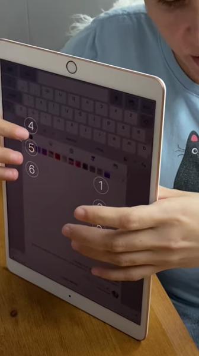

Intro to Web and Mobile Accessibility
What is Accessibility? ü§î
A measure of how simply a person can participate in an activity.
Accessibility vs Inclusive Design
Types of Disabilities
- Visual üëì
- Hearing üëÇ
- Motor ü¶Ω
- Cognitive ü߆
Permanent vs Temporary vs Situational Disabilities


How Common are Disabilities?
| Disability | % |
|---|---|
| Mobility | 18.6% |
| Sight | 16.4% |
| Hearing | 14.6% |
| Cognitive | 16.4% |
1 in 4 US Adults Live With a Disability (CDC)
People With Disabilities Live Full & Active Lives
- Disabled people cook üç≥
- Disabled people travel üöó
- Disabled people shop ü§ë
- Disabled people take photos üì∏
- Disabled people play music üé∏
Jeff Healey
Stevie Wonder
Accessibility in Everyday Life
Subtitles & Closed Captions

Sign Language

Wheelchair Accessible Seating

Bus Ramps/Lifts
Braille ATM Keys

Pedestrian Signals

Accessibility on Computers
Screen Reader Software
Screen Magnifiers
Closed Captions

Eye Tracking Devices
Keyboard Overlays

Braille Displays
Accessibility on Mobile Devices
VoiceOver (iOS)

TalkBack (Android)
Braille Keyboards
How Do We Build Accessible Applications?
Building Accessible Web Applications
- Semantic HTML
- Keyboard support
- ARIA
Building Accessible Mobile Applications
iOS (SwiftUI)
Android (Kotlin)
Cross-Platform (React Native/JavaScript)
üéâ Easy Accessibility Wins üéâ
- Use semantic HTML
- Use your keyboard
- Use a contrast checker

- Describe your images
&:hover➡️&:hover, &:focus- Run a Lighthouse audit
Lighthouse

Lighthouse

Accessible ≠ Usable

Alt Tags

Skip Links

So Why Does Accessibility Matter?
- It's the right thing to do.
- It makes everyone's life easier.
- It's good for SEO.
- It'll keep you from getting sued.
- It's great for business.
Accessibility is the right thing to do. And not just the right thing; it’s profoundly the right thing to do, because the one argument for accessibility that doesn’t get made nearly often enough is how extraordinarily better it makes some people’s lives. How many opportunities do we have to dramatically improve people’s lives just by doing our job a little better?—Steve Krug